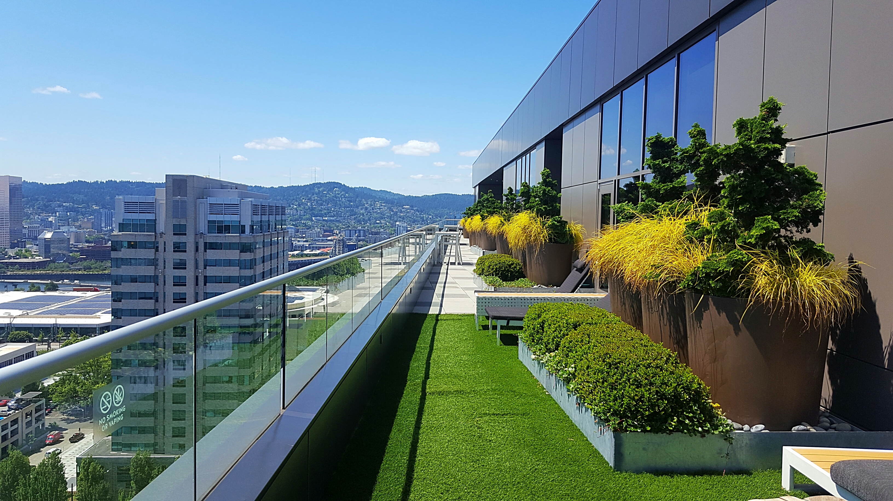

Academics
School
OSU undergrad (2019-Present)
- Computer Science Major
- I'm looking to complete a BS in computer science at Oregon State University and potentially
move on to an MS afterwards. For my specialization I am looking into data science, although have still not made
a full decision yet. Regardless, I am trying to collect the important skills to successfully make into the industry
and possibly create some projects of my own!

Highschool grad (2015-2019)
Resume download (public)
Others
Proficient languages:
- C++
- Python
- Javascript
- HTML
- Assembly - MASM
Side project:
- Gaming hub with 9 compiler-run games written in C++ and Python. This code is
accessible through my github.
- Games: Battleship, Gess, Wheel of Fortune, Pig, Memory game,
TicTacToe, etc.
Skills:
- Logic - Ability to find/program clever logical solutions to problems
- Efficiency - Able to write concise and resourceful programs
- Consistency - Able to retain and implement skills regularly